일정이 바뀔 때마다, 약속한 날짜를 좌우하는 일이 어디로 옮겨 갔는지 먼저 알려 주는 에이전트.
채팅창 하나로 끝나지 않는다. 에이전트가 스케줄, 간트, 비교판 창을 직접 열고, 담당자에게 먼저 묻는다. 건설 현장, 생산 라인, 연구 과제, 시스템 구축처럼 마감이 있는 모든 일정에 쓴다.
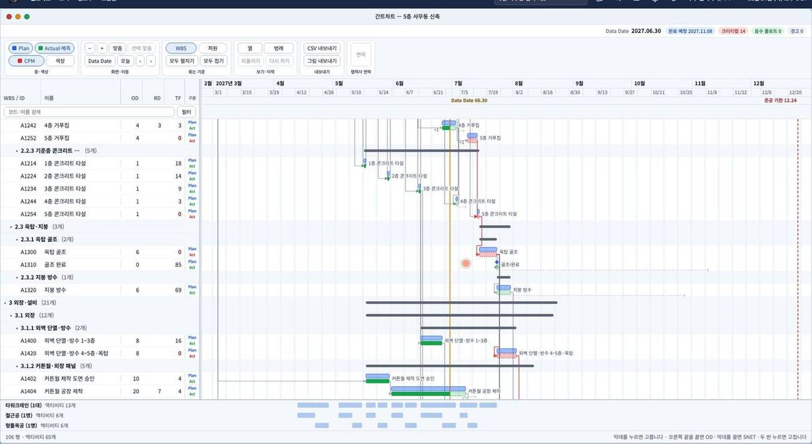
손장호건설·플랜트 PM 15년차
2026-11-12 ~ 11-25저장소 11-19 신규
github.com/sohnjangho/chronos데모 영상 〔링크〕
01 · 문제 · 내가 겪은 장면
당겨도 소용없던 밤
15년 동안 일정을 맡으며 가장 자주 본 실패. 몰라서가 아니라, 마감을 좌우하는 일이 옮겨 간 걸 늦게 알아서 생겼다.
1
골조가 크리티컬이야. 야간 작업 넣어서 당기자.
저녁 현장 사무실. 공정표의 빨간 줄은 골조였다. 늦어지면 준공도 늦는다.
2
밤샘 타설. 골조는 예정보다 5일 빨리 끝났다.
야간 골조. 사람과 장비를 더 넣었다. 돈이 들었다.
3
커튼월이 아직 안 왔다고요?
"공장 제작이 3일 늦어졌습니다…"
골조는 끝났는데 외벽이 비었다. 그사이 커튼월 공장이 늦어져 있었다.
4
5일을 당겼는데, 준공은 하루 당겨졌다.
ChronOS · 당긴 5일 중 1일
마감을 좌우하는 일은 이미 커튼월로 옮겨 가 있었다. 지금이라면 ChronOS 가 당기기 전에 알려 준다.
왜 이렇게 됐나
공정이 늦어서가 아니라, 늦게 알아서 약속을 어겼다.
01컷 1
공정표는 일주일에 한 번 다시 그린다
변동은 매일 들어오는데, 벽의 빨간 줄은 지난 회의 때 그대로다.
02컷 2
당기기 전에 효과를 재 볼 수 없다
야간 작업에 돈과 사람을 넣고 나서야 결과를 안다.
03컷 3
바깥 소식은 전화로, 뒤늦게 온다
업체 사정은 공정표 어디에도 없다. 들은 말은 기록으로 남지 않는다.
04컷 4
좌우하는 일이 옮겨 가도 알려 주지 않는다
P6 와 엑셀은 계산은 해도 "어제와 무엇이 바뀌었나"를 말하지 않는다.
이해를 돕기 위한 연출 이미지. Liner Images API(openai/gpt-image-2.6-sunburst)로 만들었고, 4번 모니터에는 실제 ChronOS 화면을 합성했다.
ChronOS · .EXE-THON 2026
01 · 문제 · 같은 3일, 다른 영향
크기가 아니라 위치가 약속을 늦춘다
일정은 약속이다. 마지막 날짜는 발주처, 고객, 팀과 맺은 약속이다. 그리고 일정은 매 순간 바뀐다. 같은 3일 지연이라도 여유가 있는 작업이면 준공은 그대로고, 준공일을 좌우하는 작업이면 준공도 늦는다. 변동이 쌓이면 좌우하는 작업 자체가 바뀐다.
시연 일정 「5층 사무동 신축」(가상)에서 엔진이 계산한 값. 빗금은 늘어난 3일, 오른쪽 막대는 남은 여유. 준공이 그대로라 안심하는 바로 그때 옮겨 간다.
쉬운 용어
준공일을 좌우하는 작업
하루 늦으면 준공도 하루 늦는 작업들. 크리티컬 패스. ChronOS 화면에서는 「결정 줄」.
쉬운 용어
여유
준공을 밀지 않고 늦출 수 있는 일수.
쉬운 용어
관리 포인트
좌우하는 작업이거나 여유 3일 이하인, 앞으로 3주 안의 작업. 변동마다 다시 뽑는다.
사람도 도구도 놓치는 것
해야 할 일
사람
P6 등
엑셀
AI 챗봇
ChronOS
변동마다 다시 계산
주간 회의
○
×
날짜 틀림
○
옮겨 간 것을 알림
놓침
×
×
×
○
그곳의 바깥 위험
감
×
×
출처 없음
○
담당자 확인·기록
기록 없음
×
×
×
○
계산만 빠른 도구는 이미 있다. 빠져 있는 것은 계산 다음, 어디를 볼지 알려 주고 그곳의 위험을 찾고 담당자에게 묻는 일이다.
약속을 하루 어기면
1,500만 원
300억 원 공공 공사의 하루 지체상금. 계약금액의 1천분의 0.5(국가계약법 시행규칙 제75조).
누가 불편한가
공정 담당 소식마다 공정표를 손으로 맞춘다. PM 마지막에 본 크리티컬을 당긴다. 현장 관리자 전화를 돌리고 기록은 없다. 〔PM 확인〕
ChronOS · .EXE-THON 2026
02 · 해법 · 노하우를 에이전트로
15년차 PM이 하던 세 가지를 변동이 올 때마다 대신 한다
하나 · 다시 본다
지금 준공일을 좌우하는 작업은 어디인가
변동마다 코드가 영향을 재고 관리 포인트를 다시 뽑는다. 바뀌었으면 카드로 알린다.
둘 · 따져 본다
이걸 당기면 준공이 당겨지나
당긴 일수 가운데 준공에 반영되는 일수와 그다음 좌우하는 작업을 코드가 계산한다.
셋 · 먼저 묻는다
그 작업의 담당자에게 먼저 확인한다
바깥 위험을 출처와 함께 찾고, 문자와 AI 전화로 묻고, 답마다 근거를 남긴다.
에이전트의 한 바퀴
코드
날짜, 여유, 자원, 영향, 관리 포인트, 당김 효과를 계산한다. 4겹 하네스로 규칙을 점검한다.
Liner
요청을 알아듣고, 볼 바깥 자료를 고르고, 출처 있는 근거와 연락 글, 통화 요약을 쓴다. 날짜는 계산하지 않는다.
사람
승인과 거부, 조건 확정, 연락 보내기. 일정은 사람이 승인해야 바뀐다.
ChronOS · .EXE-THON 2026
02 · 해법 · Liner 를 어디에, 왜
CPM 이 볼 곳을 정하고, Liner 가 그곳의 일을 찾아온다
LINER MODEL
두뇌
요청을 알아듣고, 질문지를 만들고, 일정 초안을 쓰고 고치고, 만회안을 설명하고, 연락 글과 통화 요약을 쓴다. 현장 사진도 읽는다.
cost자주 도는 감시
balanced대화
quality만회안 판단
Router 전략을 일에 따라 나눠 쓴다. 쉬지 않고 돌아도 비용이 버티는 까닭이다.
LINER SEARCH
근거
약속을 바꾸는 결정에는 출처가 있어야 한다. 새 관리 포인트가 생기면 그 작업에 대해서만 찾는다.
Premium Data 알루미늄·구리 시세, 원·달러 환율
MCP 업계 소식, 법령, 업체 정보
Search Agent 근거가 된 문장과 링크
모든 작업이 아니라 새 포인트에만 찾으니 호출이 적다.
실제로 불러 본 결과
22/22Model · Router 도구 호출, strict JSON
30개월Premium Data 금속 시세 · 원·달러
5/5MCP 법령 · 업체
15/15Visualization 차트 숫자 일치
뜻 검색Embeddings 자료함
Liner 가 아닌 것: 날짜 계산은 코드, 날씨는 기상청, 실시간 통화 음성은 Gemini Live(지연 시간 때문), 문자와 전화 통로는 한국AI통신.
하지 않는 것
AI 가 날짜를 계산하지 않는다. AI 가 낸 날짜는 코드가 버린다.
자료가 없으면 숫자를 만들지 않는다. 「바깥 자료 없음」으로 둔다.
못 읽은 사진에 숫자를 붙이지 않는다. 관리자가 사람 판독한다.
사람 승인 없이 일정을 바꾸지 않는다.
허락 없이 연락하지 않는다. 기본값은 「승인 받기」.
전화번호를 AI 모델에 주지 않는다.
ChronOS · .EXE-THON 2026
03 · 에이전트가 쓰는 OS
WOW 1 · OS + COMPUTER USE
ChronOS
대화하면, 일정표가 움직인다.
에이전트와 일정 도구가 한 화면에 있다. 대화창에 "커튼월 공장 제작이 3일 늦어졌어"라고 쓰면 에이전트가 답을 글로만 주지 않고 스케줄, 지연 기록, 비교판 창을 직접 열어 일한다. 사람은 대화를 이어 가며 창이 바뀌는 것을 보고, 마지막에 승인한다.
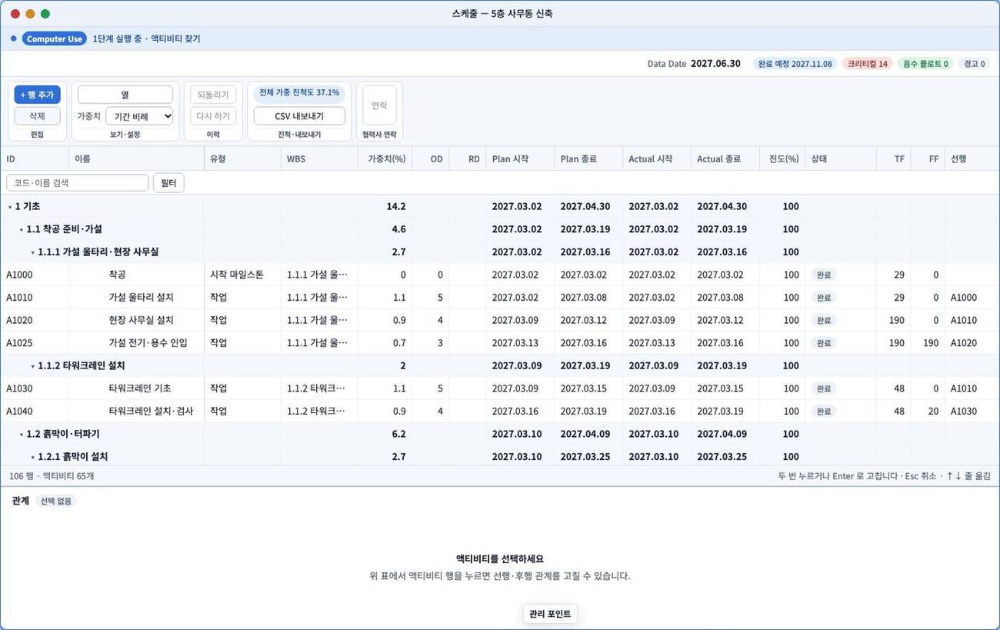
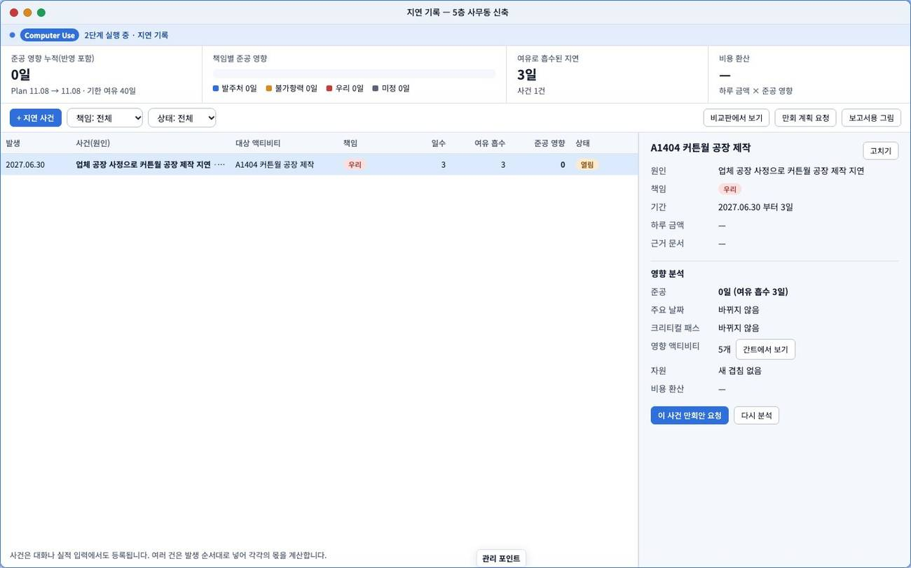
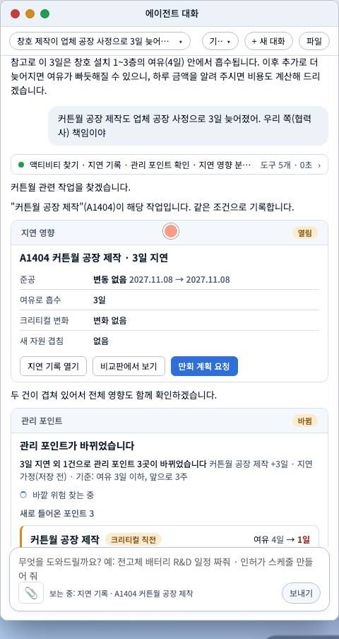
0대화로 요청
1스케줄에서 작업을 찾고
2지연 기록에서 영향을 재고
3비교판에 만회안을 띄운다
한 화면에서대화와 일정 도구가 따로 놀지 않는다. 사람이 고른 작업을 에이전트도 본다.
Computer Use스크린샷을 흉내 내지 않고, 자기 OS 의 창을 도구(ui.open_window)로 정확히 연다.
사람이 결정앱 19개가 같은 승인함을 쓴다. 일정은 승인해야 바뀐다.
ChronOS · .EXE-THON 2026
03 · 에이전트가 쓰는 OS · 워크플로우
WOW 1 · 이어서
정해진 순서 대신, 워크플로우를 그 자리에서 짠다
요청이 들어오면 워크플로우 창이 열려 단계가 하나씩 생기고, 단계마다 그 일을 하는 창이 앞으로 나온다. 단계를 누르면 어떤 도구를 왜 썼는지, 무엇을 받아 무엇을 돌려줬는지, 어느 모델이 얼마를 썼는지 나온다.
1단계 1개
2단계가 자란다
3완료
i단계 상세
[스킬로 저장]
잘 된 순서는 스킬로 남긴다. 비슷한 요청이 오면 에이전트가 꺼내 쓴다. 베테랑의 일하는 순서가 회사에 남는다.
보여 주는 정도는 사람이 고른다
스테이지 창 전환 · 워크플로우 창만 · 끄기. 조용히 쓰고 싶으면 끈다.
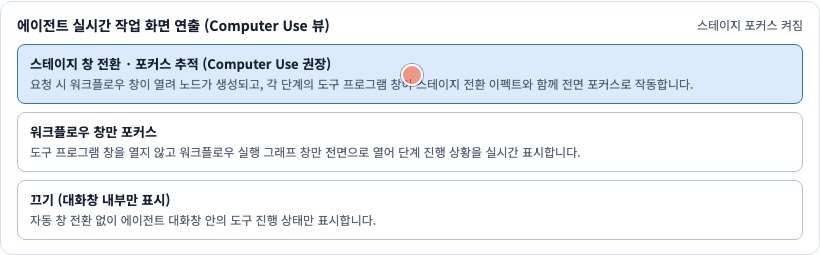
Dock 의 앱 19개. 모두 같은 승인함, 하네스, 버전, 도구 등록부를 쓴다.
보인다에이전트가 한 일을 글로 설명받지 않고 화면에서 본다. 책임이 큰 일에서는 이것이 신뢰다.
같이 쓴다사람이 스케줄 창에서 고른 작업을 에이전트도 본다(「보는 중: 스케줄 · A1404」).
붙는다새 앱은 폴더 하나와 도구 등록으로 붙고, 붙는 순간 에이전트가 쓴다.
ChronOS · .EXE-THON 2026
04 · 실제로 도는 시연 · 장면 0
WOW 4 · AI 공정표 초안
말 한 줄이 공정표 초안이 된다
시연 일정은 「5층 사무동 신축」(가상)이다. 아래 숫자는 모두 엔진이 계산했고 자동 시험이 고정한다. 시작은 한 줄이다. "5층 사무동 공정표 만들어 줘. 착공은 3월, 준공은 연말까지."
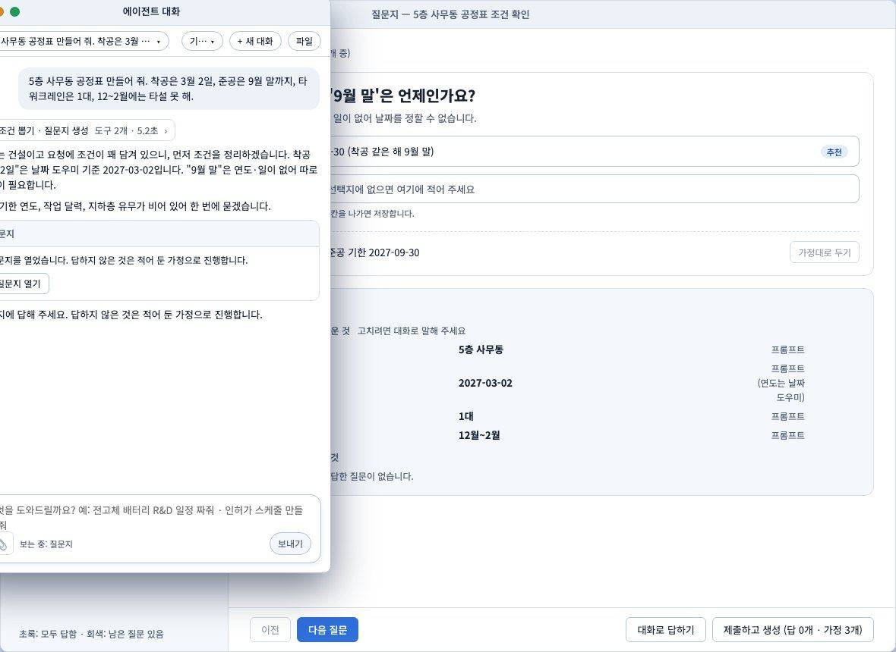
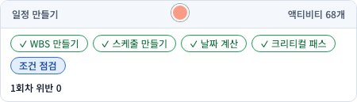
1바로 그리지 않고, 질문지로 먼저 묻는다
2날짜는 코드가 계산하고 점검
!규칙 위반이면 다시 짜게 한다
3승인함
4간트에 그려진다
먼저 묻는다모자란 정보는 질문지로 묻고, 답하지 않은 질문은 적어 둔 가정대로 간다.
날짜는 코드가AI 는 작업과 기간과 관계만 쓴다. 동절기 타설, 크레인 겹침 같은 위반은 코드가 잡는다. 촬영 네 번 중 세 번 한 번에 통과, 한 번 위반 1건.
처음 보는 분야도용어, 작업 계층, 위험 규칙을 그 자리에서 만든다. 협력사 엑셀을 붙이면 빈칸만 묻는다.
ChronOS · .EXE-THON 2026
04 · 실제로 도는 시연 · 장면 1, 2
같은 3일인데, 관리 포인트가 바뀌었다
장면 1. "창호 제작이 3일 늦어졌어." 준공도 관리 포인트도 그대로다. 창호 쪽은 여유가 18일이다. 이어서 "커튼월 공장 제작도 3일 늦어졌어." 이번에도 준공은 그대로라 사람은 안심한다. 하지만 커튼월 쪽 여유가 4일에서 1일로 줄고 새 관리 포인트 3건이 생겼다.
장면 2. 에이전트가 「관리 포인트가 바뀌었습니다」 카드를 띄운다. 새 포인트에 대해서만 Liner Search 가 바깥 위험을 찾는다. 6개월이 넘은 글은 쓰지 않고, 찾지 못하면 「바깥 자료 없음」으로 둔다. [근거 문장 보기]를 누르면 출처 문장이 열린다.
1창호 +3일 · 변화 없음
2커튼월 +3일 · 포인트 3건
3바깥 위험
4근거 문장
PREMIUM DATA
알루미늄 3개월 -3.2%
World Bank · 2026-10
PREMIUM DATA
원·달러 1,343원
Xignite · 〔갱신: 촬영 시점 값〕
MCP · SEARCH AGENT
업계 소식 한 줄
「알루미늄 커튼월 시장 규모 및 산업 분석」(2026-07-11)
ChronOS · .EXE-THON 2026
04 · 실제로 도는 시연 · 장면 3
WOW 3 · AI 문자·전화
에이전트가 담당자에게 먼저 묻는다
[담당자에게 확인 연락]을 누르면 에이전트가 물어볼 것을 써 오고 사람이 고친다. 여기서는 「2교대 가능 여부」를 더하고, 말하지 않을 것에 「금액, 다른 업체」를 적었다.
비서 · 0:00안녕하세요, 성수동 사무동 신축현장 일정 담당 ChronOS AI 비서입니다. 이 통화는 기록됩니다.
비서커튼월 공장 제작이 7월 10일까지 끝나야 하는 일정인데, 제시간에 끝낼 수 있을까요?
김 과장3일 늦어졌지만 7월 10일은 맞출 수 있습니다.
김 과장그런데 2교대 하면 단가는 얼마나 올라요?
비서 · 범위 밖 질문그 부분은 제가 말씀드릴 수 없어서, 담당자께 전달하겠습니다.
김 과장2교대는 다음 주부터 가능합니다.
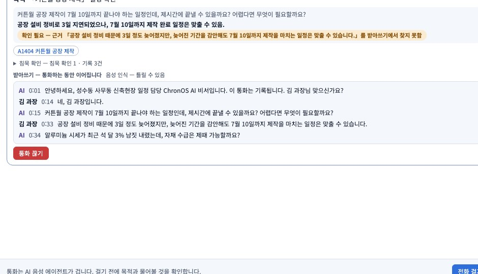
1통화 중
2질문마다 답과 근거
받아쓰기. 누가 언제 무슨 말을 했는지 그대로 남는다.
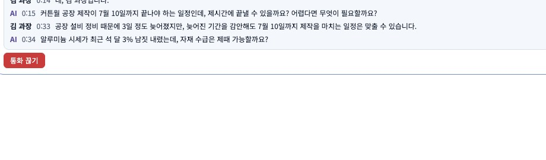
사람이 정한다무엇을 묻고 무엇을 말하지 않을지 사람이 고친다. 보내기 기본값은 「승인 받기」.
번호를 모른다AI 모델은 전화번호를 보지 않는다. 연락처 id 와 이름만 보고 번호는 코드가 붙인다.
근거가 남는다81초 통화 뒤 받아쓰기와 답을 대조한다. 근거 없는 답은 사실로 남기지 않는다.
시연 통화는 AI 두 세션을 이은 시험 통화 녹음이다. 실제 전화망 통화도 따로 시험해 첫 응답 약 1.1초, 받아쓰기, 걸려 온 전화 받기를 확인했다. 나가는 연락은 시험 모드, 차단, 근무시간, 상한, 권한, 중복 검사를 거친다.
ChronOS · .EXE-THON 2026
04 · 실제로 도는 시연 · 장면 4
WOW 2 · 5일 중 1일
당기기 전에 묻는다. 이걸 당기면 며칠이 줄어드나.
"옥탑 골조를 5일 당기면?" 에이전트가 코드로 다시 계산해 바로 답한다. 당긴 5일 가운데 마감에 반영되는 날은 하루. 이미 커튼월 쪽이 마감을 좌우하고 있어서다. 그래서 다음에 볼 곳까지 알려 준다.
1커튼월이 3일 늦어 좌우하는 일이 바뀜
2"5일 당기면?" → 5일 중 1일
3관리 포인트 창에서 커튼월부터
1/5
당긴 5일 중 마감에 반영되는 날
준공 2027-11-08 → 11-06
힘 쏟기 전에야간 작업이나 장비를 더 넣기 전에 효과를 숫자로 본다. 같은 5일이 커튼월 지연 전에는 4일이었다.
계산은 코드AI 는 날짜를 셈하지 않는다. 확인용 계산이라 일정은 바뀌지 않는다.
다음 행동까지다음 결정 줄은 커튼월 공장 제작 → 자재 반입 → 설치. 바깥 위험과 담당자 연락으로 이어진다.
ChronOS · .EXE-THON 2026
04 · 실제로 도는 시연 · 장면 5
대안을 견주고, 사람이 결정한다
만회안 B 는 크레인을 1대에서 2대로, 천장 마감을 15일에서 12일로, 커튼월 설치를 10일에서 8일로 줄여 준공을 11-01 로 6일 당긴다. 비교판에서 다른 안과 견주고 승인함에서 사람이 승인한다. 승인하면 새 버전이 되고 에이전트는 관리 포인트를 다시 뽑는다. 한 바퀴가 닫힌다.
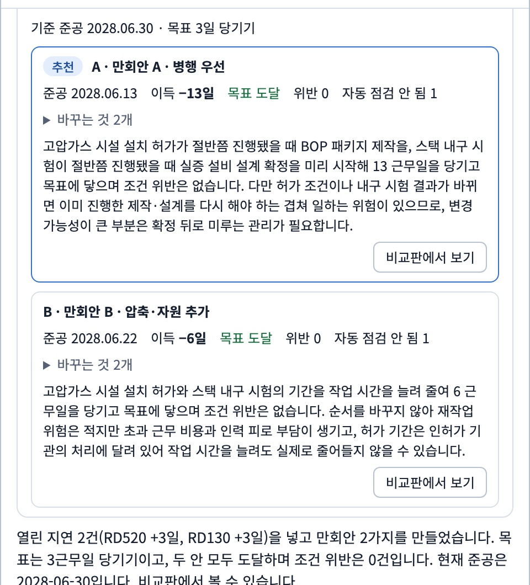
1만회안 카드
3승인함에서 사람이 승인
2비교판 요약 · 만회안 B 준공 11-01
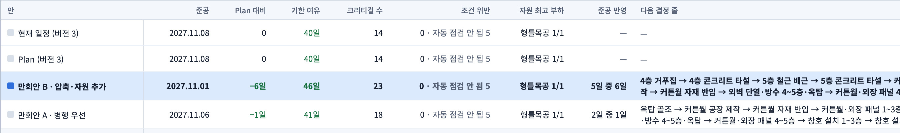
4다시 뽑은 관리 포인트 · 이번 주, 다음 주, 그다음 주
ChronOS · .EXE-THON 2026
04 · 실제로 도는 시연 · ChronOS 가 있는 밤
같은 날, 다른 밤
커튼월 공장이 3일 늦어진 그날로 돌아간다. 이번에는 ChronOS 가 있다.
1
ChronOS관리 포인트가 바뀌었습니다. 커튼월 공장 제작 · 여유 4일 → 1일
다시 본다. 지연이 들어온 그 자리에서 다시 계산하고, 마감을 좌우하는 일이 커튼월로 옮겨 갔다고 먼저 알렸다.
2
골조를 5일 당기면?
ChronOS당긴 5일 중 1일만 준공에 반영됩니다.
따져 본다. 야간 작업을 넣기 전에 숫자로 확인했다. 골조는 그대로 두었다.
3
ChronOS · AI 전화7월 10일까지 제작이 가능할까요?
"7월 10일은 맞출 수 있습니다."
먼저 묻는다. AI 가 커튼월 업체에 먼저 전화했다. 질문별 답과 근거가 통화 카드로 남았다.
4
힘은 커튼월에 썼다. 약속한 날짜는 그대로.
사람이 정한다. 만회안은 승인함에서 사람이 골랐다. 일정은 승인한 뒤에 바뀌었다.
그날 밤
ChronOS 가 있는 밤
알게 된 때
다음 주 회의 〔PM 확인〕
지연을 입력한 그 자리 〔실측〕
골조 5일 당김
야간 작업으로 당김, 준공은 1일
당기기 전에 "5일 중 1일" 확인
커튼월 업체
뒤늦게 전화로 앎
AI 가 먼저 묻고, 답과 근거를 기록
결정
마지막에 본 크리티컬을 당김
비교판의 숫자를 보고 사람이 승인
이해를 돕기 위한 연출 이미지. Liner Images API(openai/gpt-image-2.6-sunburst)로 만들었고, 1·2번 모니터에는 실제 ChronOS 화면을 합성했다.
ChronOS · .EXE-THON 2026
05 · 프로그램 설명
ChronOS 의 앱 19개
모든 앱이 같은 승인함, 하네스, 버전, 도구 등록부를 쓴다. 사람이 직접 열어 써도 되고, 에이전트가 대화 중에 열어 쓰기도 한다. 다음 쪽부터 앱마다 실제 화면과 기능, 에이전트가 그 앱을 쓰는 방식을 적었다.
시스템 · 7
일을 시키고, 보고, 승인한다
01 에이전트 대화 02 질문지 03 워크플로우 04 승인함 05 탐색기 06 설정 07 개발 콘솔(관리자)
일정 · 9
계산하고, 견주고, 기록한다
08 스케줄 · 09 간트차트 10 CPM · 11 공정률(현장 점검) 12 관리 포인트 · 13 비교판 14 조건·규칙 · 15 지연 기록 16 보고서
연결 · 3
현장과 사람에 닿는다
17 프로젝트 관리 18 연락처(문자, AI 전화) 19 자료함
기기마다
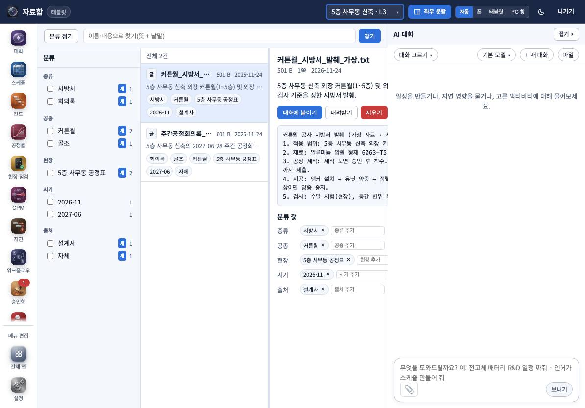
PC 창을 여러 개 띄우는 OS 화면. 에이전트가 창을 차례로 연다. 태블릿 좌우 분할, 왼쪽 레일에서 편집(위 화면).
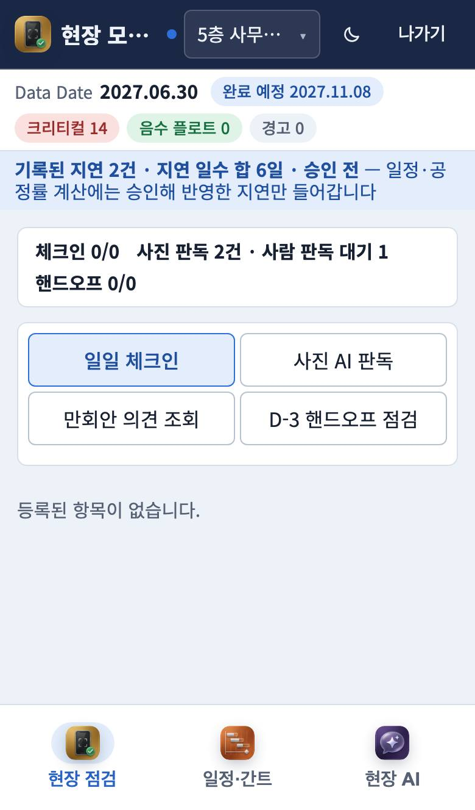
스마트폰 아래 탭 5개. 현장 계정은 현장 점검, 일정, 현장 AI 만 본다.
ChronOS · .EXE-THON 2026
05 · 프로그램 설명 · 시스템 앱
01
에이전트 대화
말 한 줄로 일을 시키는 곳. 결과는 글이 아니라 카드로 돌아온다.
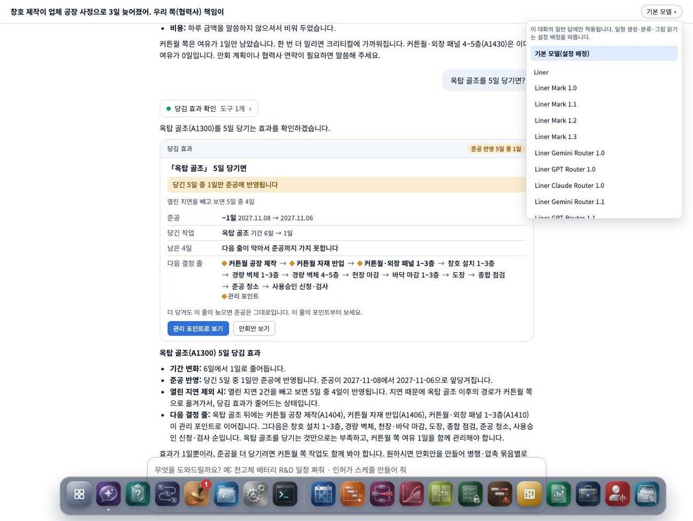
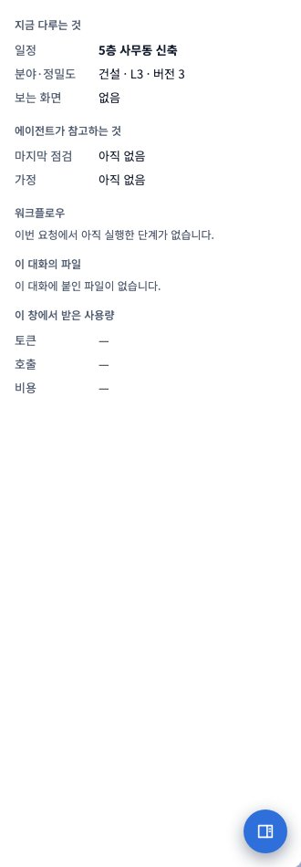
결과 카드: 일정 생성, 지연 영향, 관리 포인트, 당김 효과, 만회안, 근거, 차트
대화 정보 패널: 지금 다루는 일정, 보는 화면, 가정, 단계, 사용량
대화마다 모델 고르기, 파일 붙이기(10개, 50MB), 답 중단
문자·전화 초안도 카드로 받는다
모든 일의 출발점. 여기서 받은 요청으로 다른 창을 연다.
02
질문지
일정을 만들기 전에 모자란 정보를 묻는 창.
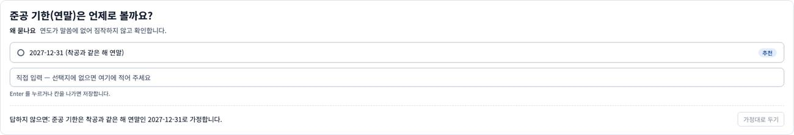
질문마다 「왜 묻나요」와 추천 선택지, 직접 입력
답하지 않은 질문은 적어 둔 가정으로 넘어간다
대화와 자료에서 미리 채운 칸은 따로 표시
질문이 셋 이상이면 에이전트가 이 창을 띄운다.
ChronOS · .EXE-THON 2026
05 · 프로그램 설명 · 시스템 앱
03
워크플로우
에이전트가 짠 단계를 그래프로 보여 주고, 잘 된 순서를 스킬로 저장한다.
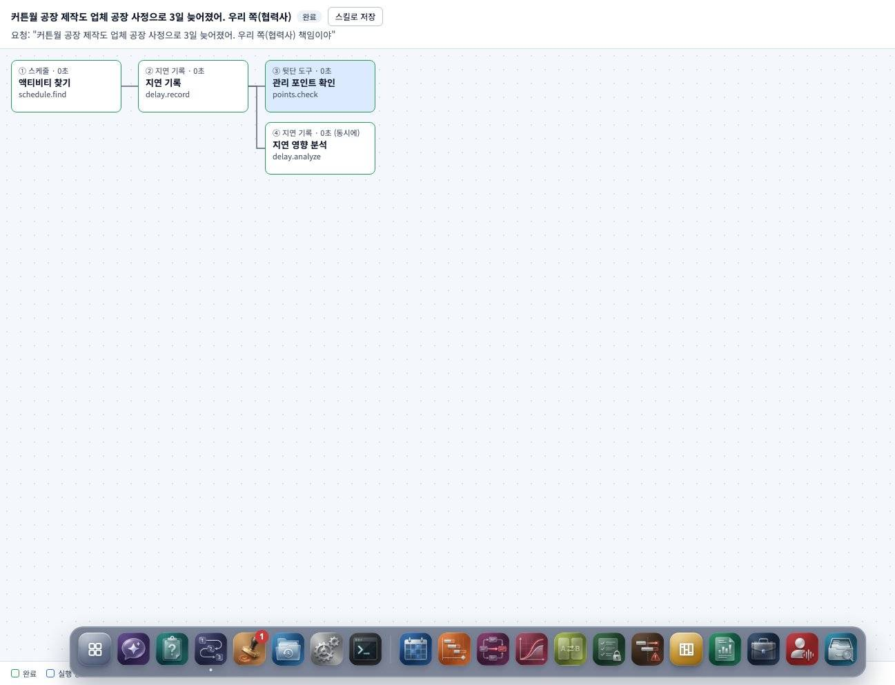
단계 그래프가 실시간으로 자란다
단계 상세: 도구, 까닭, 모델, 받은 것과 돌려준 것, 시간, 비용
[스킬로 저장] → 다음 비슷한 요청에 다시 쓴다
「워크플로우 창만」 모드에서는 이 창 하나로 진행을 보여 준다.
04
승인함
일정을 바꾸는 결정은 여기서 사람이 한다.
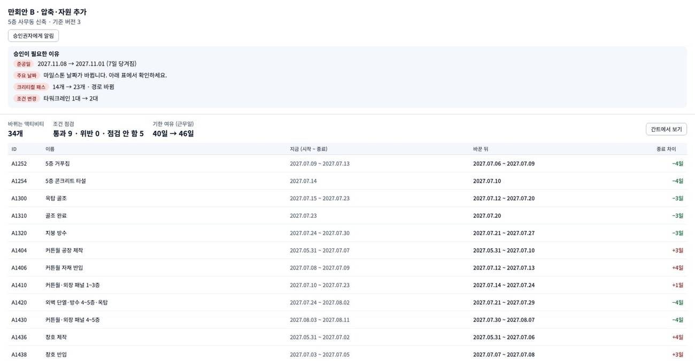
대기 건 상세: 승인이 필요한 이유, 바뀌는 작업 표, 조건 점검, 기한 여유
[승인하고 반영] [거부] [거부하고 다시 짜게 하기]
자동 적용된 건은 [되돌리기]
올리기만 하고 승인하지 못한다. 현장 관리자도 승인하지 못한다.
ChronOS · .EXE-THON 2026
05 · 프로그램 설명 · 시스템 앱
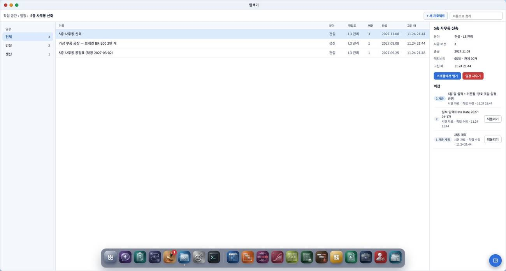
05
탐색기
일정 파일과 버전을 보관하는 곳.
분야별 일정 목록
버전 목록과 [되돌리기]. 옛 버전은 모두 남는다
일정 목록과 버전을 읽는다.
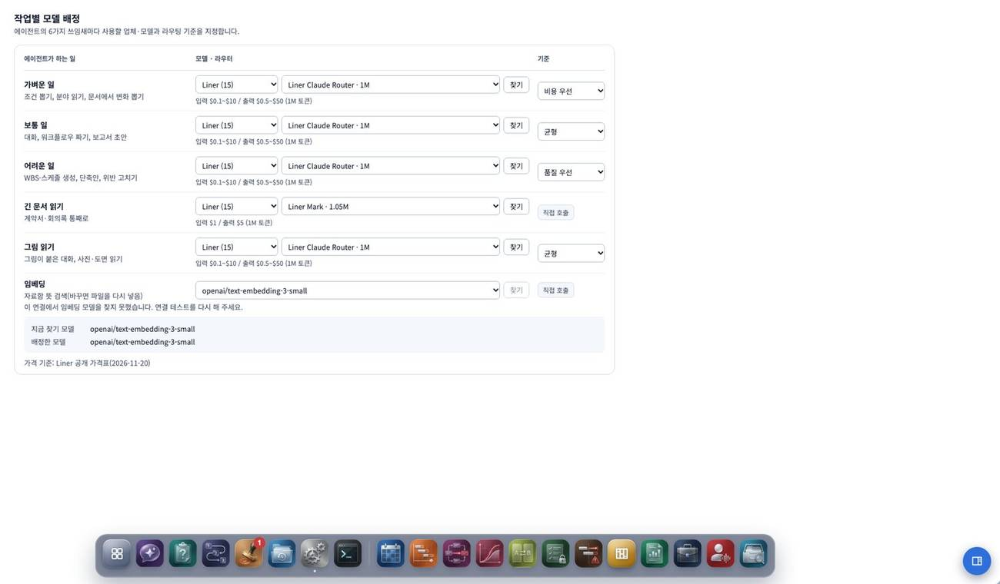
06
설정
개인 화면 설정과 관리자용 연결·정책.
LLM 연결(Liner)과 작업별 모델 배정(cost · balanced · quality)
알림 연결: 문자·AI 전화, 시험 모드, 발송 권한
에이전트 작업 연출, 분야별 바깥 자료 켜고 끄기, 계정 승인
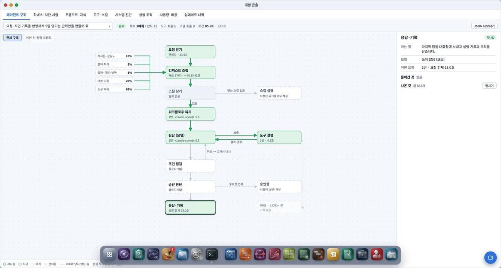
07
개발 콘솔
관리자
에이전트의 속을 들여다보는 곳.
에이전트 구조도와 이번 요청의 실행 흐름도
하네스 차단 시험, 연락 하네스 상황 × 채널 격자
실행 추적, 시스템 진단, 사용량과 비용
설정 › 분야별 바깥 자료
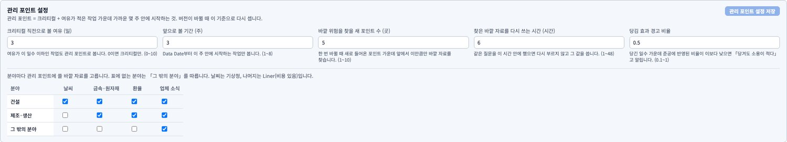
개발 콘솔 › 실행 추적
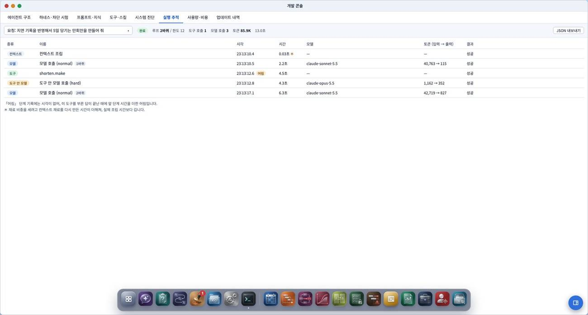
ChronOS · .EXE-THON 2026
05 · 프로그램 설명 · 일정 앱
08
스케줄
작업을 표로 보고 직접 고친다. 날짜는 모두 코드가 계산한 값이다.
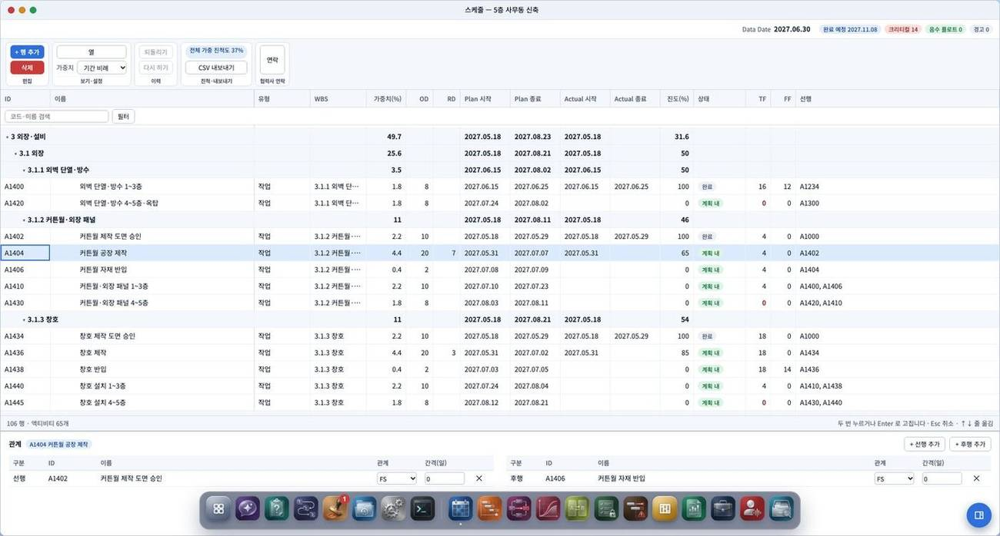
칸 편집, WBS 묶음 접기, 행 추가·삭제
관계 패널: 선행·후행(FS/SS/FF/SF + 간격)
Plan 보다 늦어지면 「지연 기록 열기」 알림, 협력사 연락
요청 속 작업을 여기서 찾아 보여 준다.
09
간트차트
막대로 계획과 실적을 겹쳐 본다.
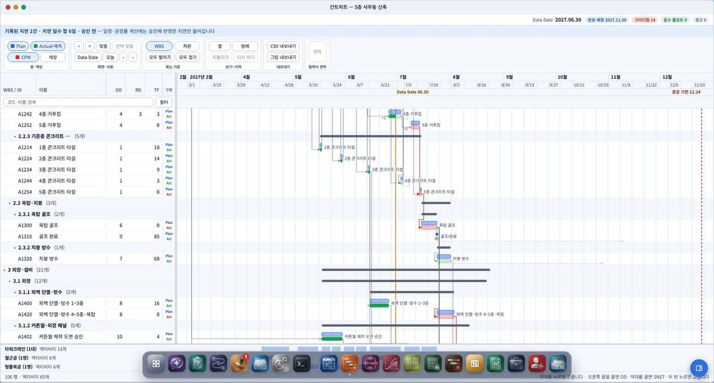
층: Plan / 실적·예측 / 크리티컬(빨강), 마일스톤, Data Date
묶는 기준: WBS / 자원(생산 일정은 설비별)
막대를 끌어 고치고, 조건 미리 보기는 점선으로
만회안과 조건 변경을 점선으로 미리 그린다.
ChronOS · .EXE-THON 2026
05 · 프로그램 설명 · 일정 앱
10
CPM
작업을 카드로, 관계를 화살표로 그린 네트워크도.
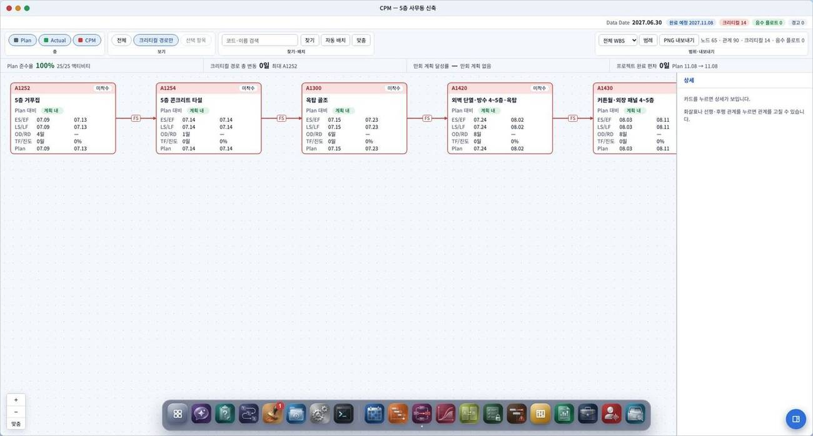
크리티컬 경로만 보기, 상세 패널(ES/EF, LS/LF, 여유)
위 요약: Plan 준수율, 크리티컬 변동, 완료 편차, 만회 달성률
화살표를 눌러 관계 고치기
좌우하는 작업이 왜 그 줄인지 화살표로 보여 준다.
11
공정률 · 현장 점검
계획 대비 실적 대시보드와 현장 협업 허브.
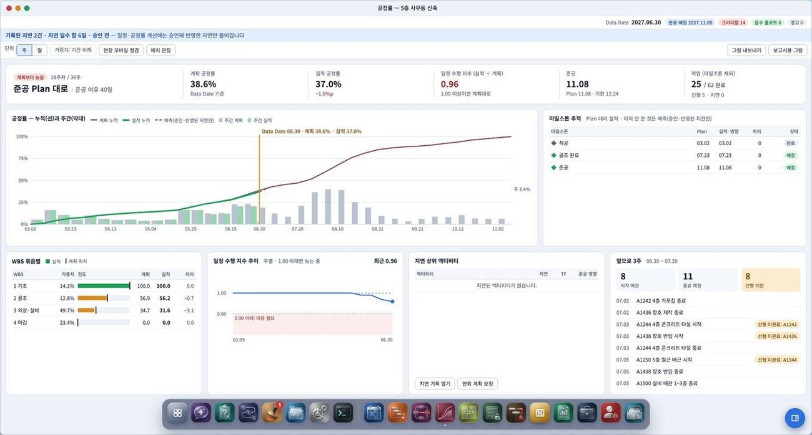
S-커브, SPI 추이, 마일스톤, 지연 상위, 앞으로 3주
현장 점검: 일일 체크인, 사진 AI 판독, 만회안 의견, D-3 핸드오프
못 읽은 사진은 「사람 판독 대기」로 관리자에게
사진을 읽되, 못 읽으면 숫자를 붙이지 않고 넘긴다.
ChronOS · .EXE-THON 2026
05 · 프로그램 설명 · 일정 앱
12
관리 포인트
지금 준공일을 좌우하는 작업을 주별로 본다.
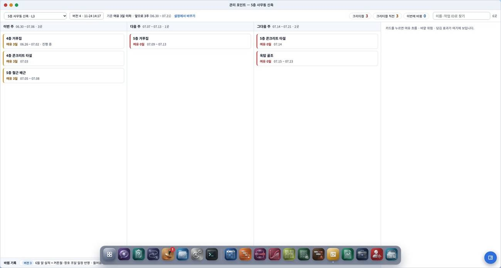
이번 주 · 다음 주 · 그다음 주 보드, 작업마다 여유와 협력사
버전마다 무엇이 들어오고 빠졌는지 「바뀜 기록」
카드에서 바깥 위험, 당김 효과, 담당자 연락으로 이어짐
변동마다 다시 뽑고, 바뀌면 카드로 먼저 알린다.
13
비교판
여러 안을 같은 척도로 견준다.
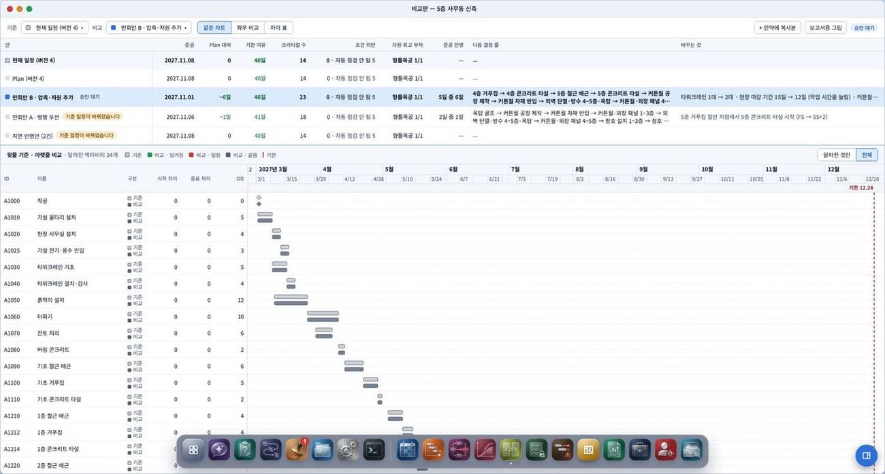
같은 차트 / 좌우 비교 / 차이 표
요약 표: 준공, Plan 대비, 기한 여유, 크리티컬 수, 조건 위반, 준공 반영
「만약에」 복사본, [이 안을 반영(승인함으로)]
만회안을 이 창에 나란히 띄운다.
ChronOS · .EXE-THON 2026
05 · 프로그램 설명 · 일정 앱
14
조건·규칙
일정에 걸린 조건을 4겹으로 보고, 바꿔 미리 본다.
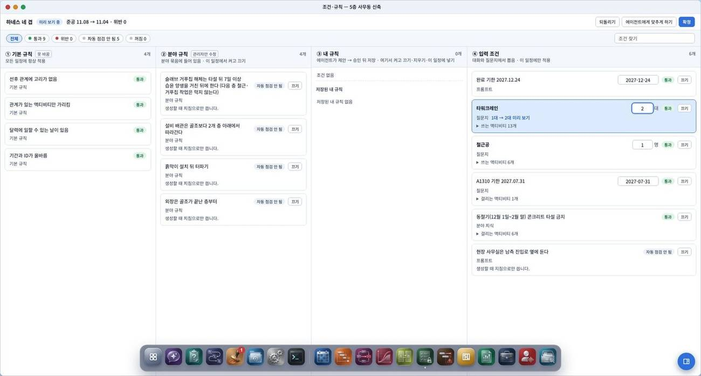
4겹: 기본 규칙 · 분야 규칙 · 내 규칙 · 입력 조건
값을 바꾸면 「준공 A → B · 위반 n」 미리 보기, 간트에 점선
내 규칙은 에이전트가 제안하고 사람이 승인해 쌓인다
규칙을 제안만 한다. 쌓는 것은 사람의 승인이다.
15
지연 기록
늦어진 사건을 기록하고 영향을 본다.
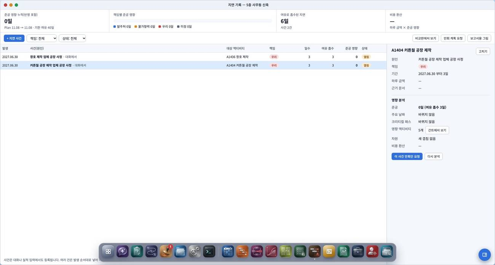
준공 영향 누적, 책임별 영향, 여유로 흡수된 지연, 비용 환산
영향 분석: 준공 변화, 크리티컬 변화, 새 자원 겹침
[간트에서 보기] [비교판에서 보기] [만회 계획 요청]
"3일 늦어졌어" 한 줄을 사건으로 기록하고 영향을 잰다.
ChronOS · .EXE-THON 2026
05 · 프로그램 설명 · 일정 앱, 연결 앱
16
보고서
월간·분기 보고서를 회사 양식대로 쓴다.
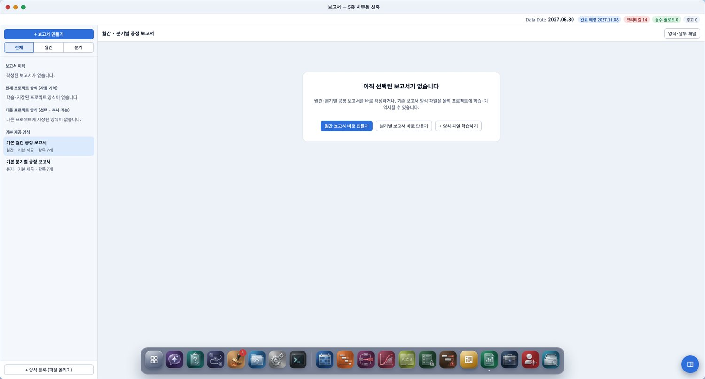
지난 보고서 파일을 올리면 구조와 문체를 배워 양식으로 기억
블록마다 AI 에게 고쳐 달라 하고 「다음에도 기억」
표 숫자는 코드 값, 차트 숫자는 전수 대조, PDF·Word 내보내기
숫자는 코드 값만 쓰고, 문장만 쓴다.
17
프로젝트 관리
AI 가 통화·문자에서 쓰는 현장 기본 정보.
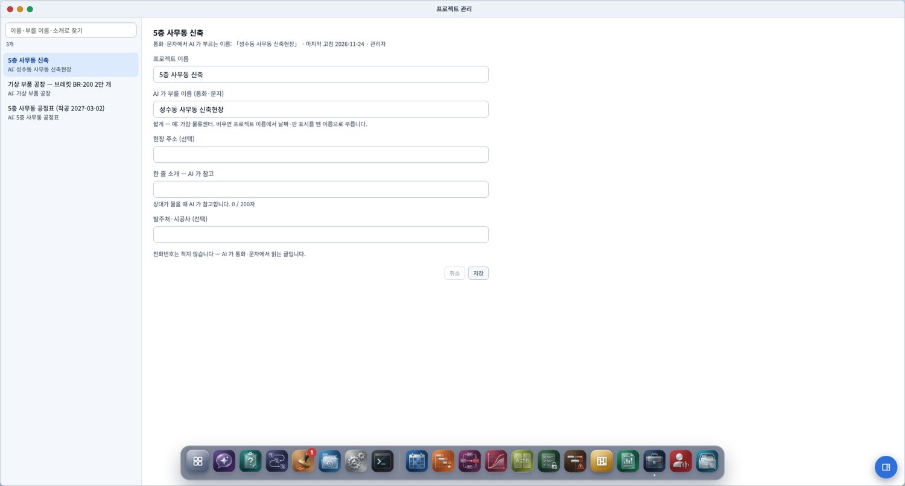
프로젝트 이름, AI 가 부를 이름(예: 「성수동 사무동 신축현장」)
주소, 한 줄 소개, 발주처
통화 첫마디에서 이 이름으로 자신을 소개한다.
ChronOS · .EXE-THON 2026
05 · 프로그램 설명 · 연결 앱
18
연락처
협력사 주소록과 문자·AI 전화.
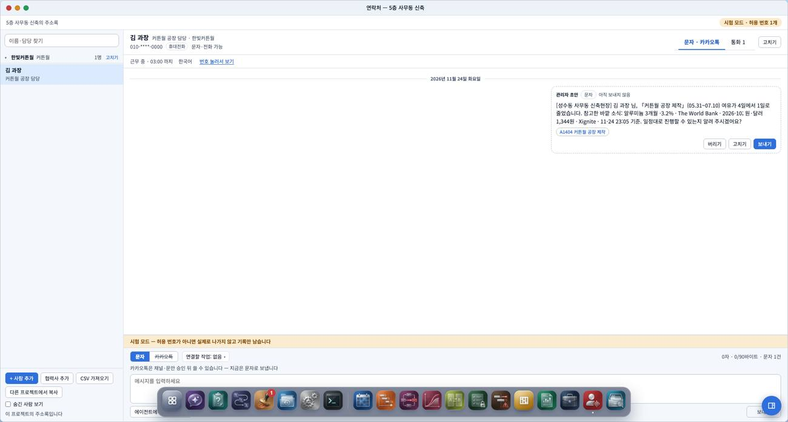
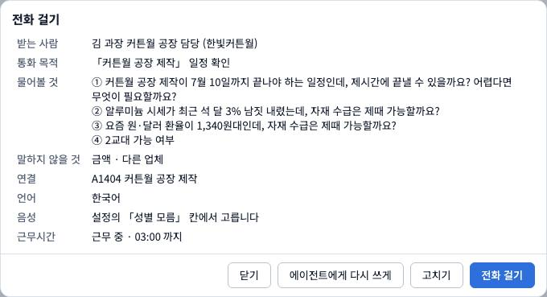
전화 걸기 창: 물어볼 것, 말하지 않을 것을 사람이 고친다
프로젝트별 주소록: 근무시간, 언어, 가린 번호
문자 대화: 에이전트 초안 → 사람이 [보내기], 예약, 번역
전화 걸기 창(물어볼 것 · 말하지 않을 것), 통화 카드, 받아쓰기
걸려 온 전화 받기, 확인할 보고, 모르는 번호
물을 것을 써 오고, 통화가 끝나면 답과 근거를 카드로 남긴다.
19
자료함
대화로 올린 문서·사진·공정표를 AI 가 분류해 둔 창고.
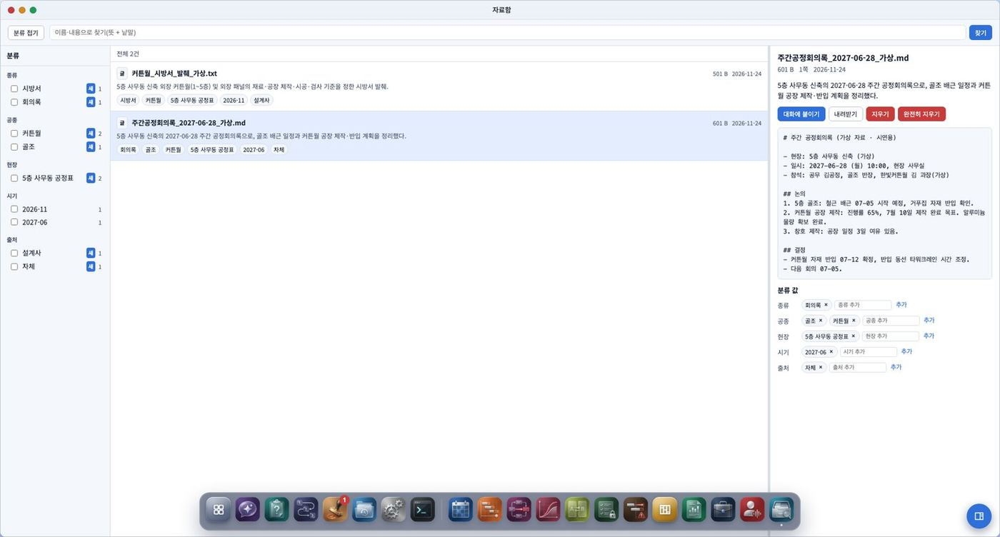
5축 분류: 종류 · 공종 · 현장 · 시기 · 출처
뜻과 낱말로 찾기(Liner Embeddings), 미리 보기, [대화에 붙이기]
근거가 필요할 때 여기서 찾아 대화에 붙인다.
ChronOS · .EXE-THON 2026
06 · 구조와 검증 · 에이전트 로직
변동 하나가 들어와 결정이 되기까지
에이전트 루프는 틀리면 다시 돈다(최대 12단계). 날짜가 필요한 순간마다 코드 엔진에 맡기고, 엔진은 4겹 하네스(기본, 분야, 내 규칙, 입력)로 규칙을 확인한다. 관리 포인트가 새로 생기면 그 작업에 대해서만 Liner Search 가 움직인다. 연락은 여섯 가지 검사를 통과해야 나가고, 통화가 끝나면 받아쓰기와 답을 대조한다. 이 흐름은 개발 콘솔의 「실행 추적」에 단계마다 시각, 도구, 모델, 비용과 함께 남는다.
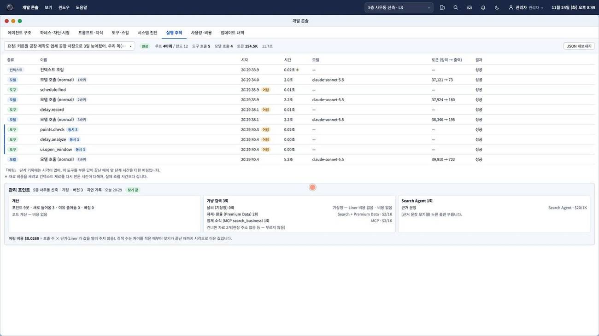
ChronOS · .EXE-THON 2026
06 · 구조와 검증
구조
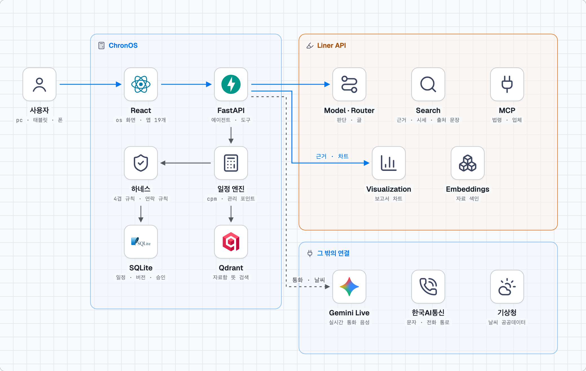
만든 것과 설계만 된 것 2026-11-24 배포본 기준
영역
동작함
설계만
일정 엔진
CPM, 자원 맞춤, 지연 영향, 만회안, 관리 포인트, 당김 효과
-
에이전트
질문지, 생성-점검-고침, 워크플로우와 스킬 저장, 도구 40여 개, Computer Use 창 전환
스킬 목록 화면
안전장치
4겹 하네스, 승인함, 버전, 연락 하네스, 사람 판독 넘기기
팀 단위 세부 권한
근거
자료함, Liner 검색, 바깥 위험, 출처 문장
스캔 PDF 인식
현장·연락
현장 점검, 문자, AI 전화 걸기와 받기, 여러 언어
카카오 알림톡 실발송
가져오기·보고
엑셀·CSV, 월간·분기 보고서(회사 양식 학습)
P6·MS Project 변환
검증
8,282서버 자동 시험 통과
2,167화면 자동 시험 통과
46단계실제 Liner 로 돌린 업무 시나리오
1.1초실제 전화망 통화 첫 응답
배포 전 깨끗한 사본에서 돌린 값이다(타입 검사·린트 0건). 시연 장면은 실제 Liner 로 두 번 리허설했다. 사진 판독은 공개 라이선스 현장 사진 10장으로 두 모델을 견줘, 숫자를 지어내지 않는 쪽을 골랐다.
ChronOS · .EXE-THON 2026
07 · 어디까지 넓어지나
늦게 아는 시간을 없앤다
옮겨 간 것을 아는 때
지금 · 주간 회의(최대 7일 뒤) 〔PM 확인〕
ChronOS · 변동 직후 〔실측〕
헛수고가 될 가속
지금 · 당긴 뒤에 안다
ChronOS · 당기기 전에 「5일 중 1일」
담당자 확인
지금 · 전화, 기록 없음
ChronOS · 81초 통화, 답마다 근거
300억 원 공사에서 하루는 지체상금으로 1,500만 원이다. 옮겨 간 것을 일주일 일찍 알면 그 일주일 동안 싸게 쓸 수 있는 방법이 아직 남아 있다.
건설과 생산 말고도
약속이 있고, 작업이 서로 이어져 있고, 변동이 잦은 일이면 구조가 같다. 엔진과 한 바퀴는 그대로 쓰고 분야마다 볼 바깥 자료만 켜고 끈다. 건설과 생산은 시연까지 했고, 나머지는 처음 보는 분야의 묶음을 즉석에서 만드는 기능으로 받는다.
분야
약속
좌우하기 쉬운 것
건설 (시연)
준공일
골조, 외장, 장납기 자재
생산 (시연)
납기
금형, 설비 보수, 원자재
플랜트 정기 보수
재가동일
장납기 부품, 검사, 크레인
조선·해양
인도일
블록 탑재, 기자재 입고
반도체·배터리 라인 셋업
양산 시작일
장비 반입, 유틸리티, 인증
신제품 개발
출시일
시제품, 인증 시험, 금형
연구과제
평가·보고 기한
시험 장비 예약, 시료, 심의
IT 시스템 구축
오픈일
데이터 이관, 연동, 검수
행사·전시 · 매장 출점
개막일 · 오픈일
대관, 시공, 운송, 인허가
생산 일정: 설비별로 묶은 간트
설정: 분야별 바깥 자료 켜고 끄기
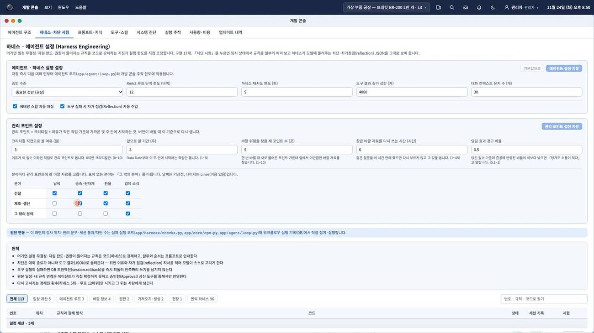
ChronOS · .EXE-THON 2026
07 · 어디까지 넓어지나 · OS 라서
일정은 시작일 뿐이다. 같은 책상에 앱을 붙인다
현장의 일은 일정 하나로 끝나지 않는다. 늦어지면 돈이 달라지고, 검사 날짜가 밀리고, 발주를 당겨야 한다. OS 로 만들었기 때문에 이런 도구를 같은 책상에 앱으로 붙인다. 원가 앱을 붙이면 "이 만회안은 얼마가 더 드나"를 같은 대화에서 묻고, 품질·안전 앱을 붙이면 관리 포인트 작업의 검사와 작업 허가를 함께 본다. 새 앱은 승인함과 하네스와 버전을 처음부터 물려받고, 에이전트는 새 도구를 등록부에서 읽고 바로 쓴다.
다른 조직과 직무로
중소 시공사와 협력사: 비싼 공정 도구 없이 대화 한 줄로 시작한다. 앱을 쓰지 않는 사람: 협력사 담당자는 문자와 AI 전화로 한 바퀴에 들어온다. 발주처와 감리: 승인 기록, 버전, 통화 근거가 그대로 보고 자료가 된다. 구매, 품질, 안전: 같은 관리 포인트에 납기, 검사, 작업 허가를 붙인다.
알려진 한계
실제 현장 운영 검증 전이다. 시연 숫자는 가상 일정에서 엔진이 낸 값이다. 국내 철근·시멘트 단가는 Liner Premium Data 에 없어 국제 금속 시세로 대신한다. 실시간 통화 음성은 Gemini Live 를 쓴다. 카카오 알림톡은 연결만 있다.
ChronOS · .EXE-THON 2026
08 · 만든 사람과 규정
공정표로 판단해 온 사람이 직접 만들었다
손장호 건설·플랜트 PM 15년차
SK온 대전 파일럿 플랜트4,200억 · PM 총괄
쿠웨이트 NWC3,000억 · Part Leader
UAE RRE#23조 · 배관 엔지니어
사우디 SRU TA2,000억 · 기계
규정
Liner API 핵심 사용(제4조 1항) 한 바퀴의 판단에 Liner Model, 근거에 Liner Search. 기간 내 신규(제4조 2항) 11-19 새 저장소에서 처음부터 만들었다. 가상 데이터(제5조) 일정, 계정, 협력사, 주소록은 가상, 사진은 공개 라이선스. 시연 통화는 시험 통화 녹음이며 실제 번호로 걸지 않았다.
보안
API 키는 암호화해 저장하고 끝 4자리만 보인다. 전화번호와 키는 로그에 남기지 않는다. 저장소 추적 파일 비밀 검사 통과 〔갱신〕.
부록 · 기술 구조 개발자 심사용
core/calendar.py
근무일 배열과 이분 탐색으로 공휴일과 금지 기간 반영
core/cpm.py
위상 정렬로 순환 차단, FS/SS/FF/SF + lag, ES/EF/LS/LF, TF/FF
core/resources.py
일일 용량을 넘지 않는 시작 자리를 찾아 후행으로 전파
core/shorten.py
병행, 압축, 자원 추가를 한 수씩 넣고 다시 계산해 만회안 생성
core/delay.py
지연 전후 비교로 새 크리티컬과 새 자원 겹침 산출
core/points.py · accel.py
관리 포인트와 당김 효과
harness/
4겹 하네스. 기본 < 분야 < 내 규칙 < 입력 순으로 경합 판정
agent/
ReAct 루프, 도구 실행 전 커밋과 실패 시 되돌림, 자가 점검, 스킬 매칭
outreach/
나가는 문(시험 모드 → 차단 → 근무시간 → 상한 → 권한 → 중복), 들어오는 문, 통화 하네스